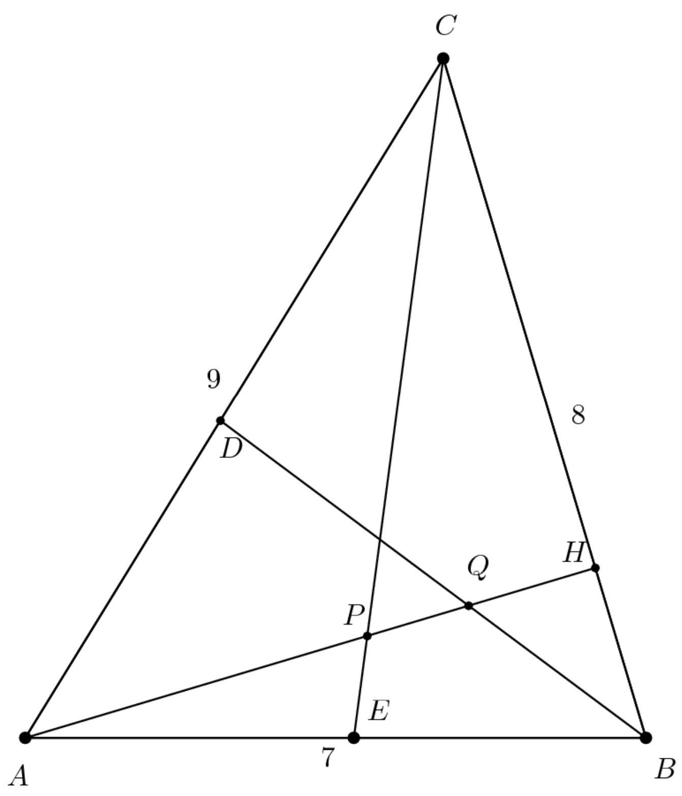

OVERVIEW
Geometry is the branch of mathematics dealing with the properties and relationships of shapes and spaces. Interestingly, the word geometry comes from the Greek words “geo” and “metry” which mean “earth” and “measurement” respectively. Geometry can be broadly divided into planar geometry – the study of two-dimensional figures – and solid geometry – the study of three-dimensional figures. Despite being a unique branch of mathematics, geometry concepts and theorems are closely interconnected with other branches of mathematics. In fact, trigonometry, algebra, and calculus can be thought of as the foundations to learning geometry while linear algebra – the study of vector spaces and linear transformations – can be considered as an extension of geometry into multidimensional space.
List of geometry topics:
- Coordinate geometry
- Polygons
- Geometric proofs
- Geometric relationships
- Solid geometry
List of geometry applications:
- Astronomy
- Computer graphics and vision
- Architecture
- Civil engineering
- Mechanical engineering
PROBLEMS
- Alice and Bob live 10 miles apart. One day Alice looks due north from her house and sees an airplane. At the same time Bob looks due west from his house and sees the same airplane. The angle of elevation of the airplane is 30 degrees from Alice's position and 60 degrees from Bob's position. Which of the following is closest to the airplane's altitude, in miles? (AMC 12B 2016 Problem 13)
- In triangle ABC shown in the figure, AB = 7, BC = 8, CA = 9, and line AH is an altitude. Points D and E lie on sides AC and AB, respectively, so that BD and CE are angle bisectors, intersecting line AH at Q and P, respectively. What is PQ? (AMC 12B 2016 Problem 17) 
SOLUTIONS
- Let Alice’s location to Point A, Bob’s location to Point B,
the airplane’s location to point C, and the location on the ground right below the
airplane to point D. Since the angle of elevation of the airplane is 30 from Alice’s
position, ACD is a 30-60-90 triangle. The same applies to the triangle BDC.
Set the length of CD to x. Then the length of DA would be √3 x and length of DB would be x/√3. Use the Pythagorean Theorem on the triangle ABD setting 〖(√3 x)〗^2+ 〖(x/√3)〗^2=10^2. Solve the equation to find x = √30. - Find the area of the triangle ABC by the Heron’s Formula:
√(s(s-a)(s-b)(s-c))=√(12(3)(4)(5) )=12√5
Use the area 12√5 to find the length of the height AH since the area of
the triangle ABC can also be found by multiplying the height
AH by the base BC and dividing by 2:
12√5 = (8(AH))/2
3√5 = AH
Apply the Pythagorean Theorem to find the length of CH and use the CH to find the length of BH: 9^2 - 〖(3√5)〗^2 = 〖CH〗^2
CH = 6
BH = CB - CH = 8 - 6 = 2
Now that we know the length of AH, CH, and BH, we can use the Angle Bisector Theorem on the triangle ABH to find the length of AQ and QH: 7(QH) = 2(AH - QH)
7(QH) = 2(3√5 - QH)
QH = (2√5)/3
AQ = AH - HQ = 3√5 - (2√5)/3 = (7√5)/3
Apply the Angle Bisector Theorem to the triangle ACH to find the length of AP: 8(AP) = 9(AH - AP)
8(AP) = 9(3√5 - AP)
AP = (9√5)/5
Find the length of PQ by subtracting AP from AQ to get: PQ = AQ - AP = (7√5)/3 - (9√5)/5 = (8√5)/15
SOURCES
Heilbron, J L. “Geometry.” Encyclopædia Britannica, 14 May 2023, www.britannica.com/science/geometry. Accessed 12 July 2023.
Mathematical Association of America. “Art of Problem Solving.” Art of Problem Solving, https://artofproblemsolving.com/wiki/index.php/2016_AMC_12B_Problems. Accessed 10 July 2023.